Conda - instalacja, konfiguracja i błędy¶
Conda to narzędzie do zarządzania środowiskami w Pythonie. Dzięki niemu możemy łatwo instalować i zarządzać pakietami w Pythonie.
Jak zainstalować conda¶
- Instrukcja instalacji conda pod Macos
- Instrukcja instalacji conda pod Windows
- Instrukcja instalacji conda pod Ubuntu
Jak skonfigurować conda¶
Jak ułatwić sobie pracę z Anaconda Prompt na Windows¶
Jak ustawić środowisko conda do pracy z Visual Studio Code i PowerShell¶
Podczas pierwszej próby uruchomienia środowiska wirtualnego conda w terminalu VS Code może wystąpić następujący problem.
The term 'conda' is not recognized as the name of a cmdlet, function, script file, or operable program.
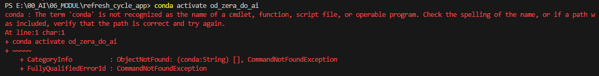
Poniżej znajduje się film instruujący jak skonfigurować środowisko conda do pracy z Visual Studio Code i PowerShell.
W filmie zaprezentuję kilka komend. Umieszczam je pod filmem, żebyście mogli je łatwo skopiować i wkleić.
Film instruktażowy¶
Tak jak wspominam w filmie, pamiętajcie o ponownym uruchomieniu komputera, po ustawieniu zmiennych środowiskowych.
Komendy do skopiowania i wklejenia¶
Inicjalizacja condy w powershell
conda init powershell
Ustawienie uprawnień do uruchamiania skryptów dla PowerShell
Set-ExecutionPolicy RemoteSigned -Scope CurrentUser
Spradzenie wersji conda
conda --version
Aktywacja środowiska wirtualnego conda
conda activate nazwa_środowiska
Utworzenie nowego środowiska wirtualnego conda
conda create -n nazwa_środowiska python=3.11
Deaktywacja środowiska wirtualnego conda
conda deactivate
Kod testowej aplikacji w streamlit, do zapisania w pliku app.py
import streamlit as st
st.write("Hello World")
Uruchomienie aplikacji w streamlit
streamlit run app.py
Zainstalowałem i skonfigurowałem condę, jednak folder modul_3 jest pusty¶
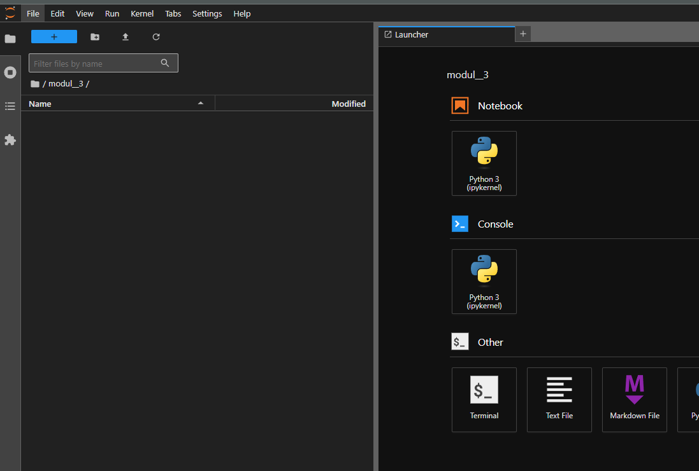
Na początku folder modul_3 jest pusty, ale z każdą kolejną lekcją stopniowo go zapełnisz. Pod filmami znajdziesz pliki do pobrania (zazwyczaj będą to notebooki), które będziesz musiał dodać do folderu modul_3.

Po pobraniu plików, przenieś je do folderu modul_3.
Docelowo na końcu modułu Twój folder będzie wyglądał tak:
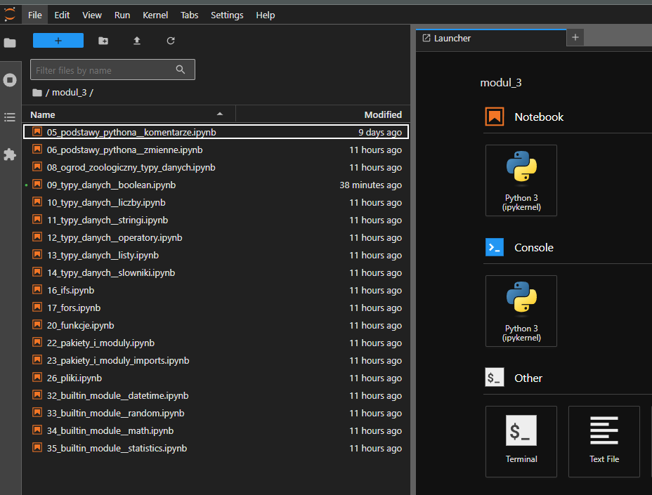
Błędy w Conda - Przyczyny i rozwiązania¶
'conda' to wszechstronne narzędzie do zarządzania środowiskami Python. Umożliwia ono łatwe instalowanie i zarządzanie pakietami, co znacząco ułatwia pracę z Pythonem. Niemniej jednak, podczas korzystania z conda można napotkać różne błędy. W tej sekcji znajdziesz przegląd najczęstszych problemów, ich możliwe przyczyny oraz sprawdzone sposoby na ich rozwiązanie.
Widzę błąd: Value type <class 'str'> must match with type plot¶
Niektóre polecenia w Condzie działają poprawnie, ale gdy próbuję narysować wykres, pojawia się następujący błąd:
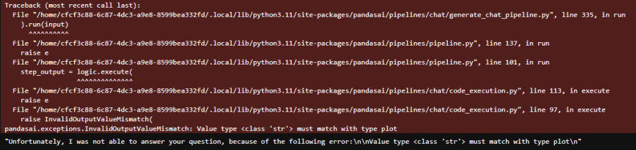
-
Sprawdź nazwę folderu, w którym znajduje się używany notebook.
- Domyślnie w kursie jest on zapisany pod nazwą modul_*, gdzie gwiazdka oznacza numer modułu.
- Upewnij się, że nazwa Twojego folderu nie zawiera spacji (zamiast spacji warto użyć podkreślnika)
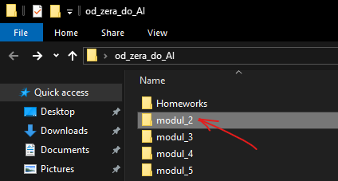
-
Zrestartuj kernel i uruchom ponownie wszystkie komórki, zaczynając od pierwszej.
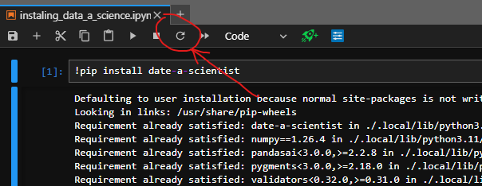
Dla zainteresowanych: przyczyną występowania błędu jest walidacja w bibliotece pandasai.
Błąd conda is not recognized w terminalu VS Code¶
Problem występuje podczas próby aktywacji środowiska wirtualnego conda w terminalu VS Code. System wyświetla komunikat:
The term 'conda' is not recognized as the name of a cmdlet, function, script file, or operable program.
Przyczyna: Terminal VS Code nie ma skonfigurowanego dostępu do poleceń conda, ponieważ PowerShell nie został zainicjalizowany z Anacondą.
Rozwiązanie:
Metoda 1 - Restart terminala:
- Zamknij terminal w VS Code (kliknij ikonę kosza). 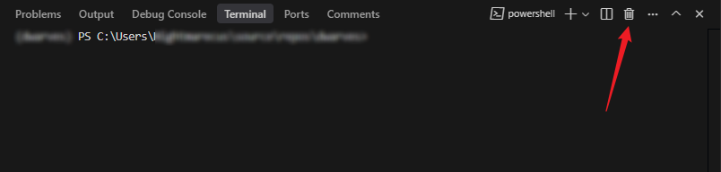
- Otwórz nowy terminal i poczekaj kilka sekund na pełne wczytanie. 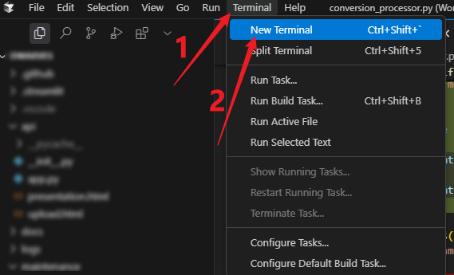
- Spróbuj ponownie aktywować środowisko.
Metoda 2 - Inicjalizacja conda (jeśli metoda 1 nie pomogła):
- Zamknij VS Code.
-
Otwórz Windows PowerShell jako administrator:
- Kliknij prawym przyciskiem myszy na ikonę Windows PowerShell
- Wybierz opcję "Uruchom jako administrator" (lub "Run as administrator" w zależności od języka systemowego)
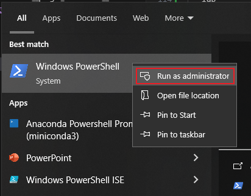
-
Sprawdź aktualne ustawienia ExecutionPolicy (uprawnienia do uruchamiania skryptów):
Get-ExecutionPolicy - Jeśli wynik to
RestrictedlubUndefined, zmień naRemoteSigned:Set-ExecutionPolicy RemoteSigned -Scope CurrentUser - Potwierdź zmianę wpisując
Yi naciśnij Enter. - Sprawdź czy ustawienia zostały zmienione (powinny być
RemoteSigned):Get-ExecutionPolicy - Otwórz Anaconda Prompt (również jako administrator).
- Wykonaj inicjalizację PowerShell:
conda init powershell -
Otwórz ponownie VS Code i użyj nowego terminala (kliknij ikonę kosza i otwórz nowy terminal - sposób opisany w Metoda 1 - Restart terminala).
⚠️ UWAGA: Odczekaj około 30 sekund na pełne wczytanie terminala i wszystkich procesów.
-
Sprawdź czy conda działa poprawnie:
conda --version - Jeśli wszystko działa poprawnie (powinna się pojawić wersja conda), aktywuj swoje środowisko wirtualne:
conda activate nazwa_środowiska
Problemy z jupyter lab / notebooki¶
Jupyter lab to interaktywne środowisko do pracy z notatnikami jupyter. Pozwala na pracę z wieloma notatnikami jednocześnie, a także na przeglądanie plików, terminal, konsolę pythona i wiele innych.
Jupyter startuje, ale nie działa. Widzę okno przeglądarki, ale Jupyter się nie odpala¶
Może oznaczać, że masz zablokowane wyskakujące okna w przeglądarce. Spróbuj uruchomić Jupyter Notebook bezpośrednio z uprawnieniami administratora. Następnie pojawi się konsola, w której będzie widać logi Jupyter Notebooka, które zawierają link do notebooka. Skopiuj ten link i wklej go do przeglądarki. Link powinien wyglądać mniej więcej tak:
http://localhost:8888/tree?token=f7e5908823221f7bc83e0382337300e6bbe552e2013cc27f
Twój token będzie inny!
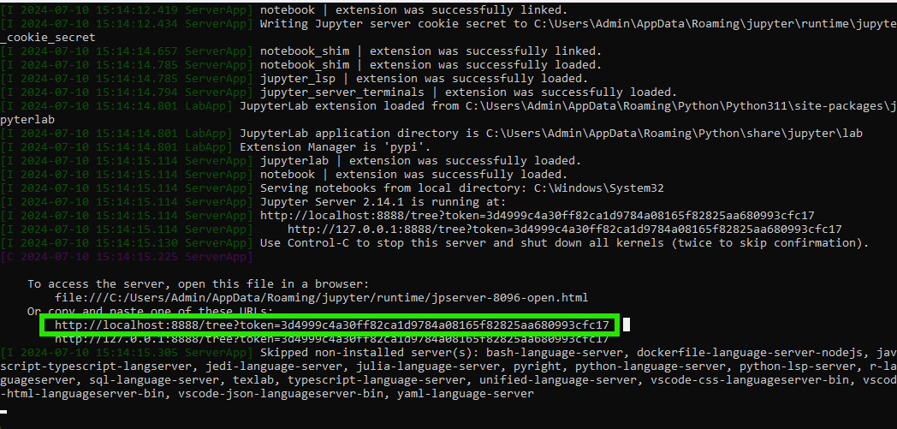
Kiedy uruchamiam jupyter lab przez terminal pojawia się nietypowy błąd¶
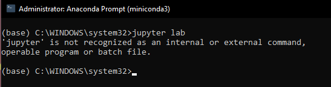
Jeśli podczas uruchamiania jupyter lab w konsoli pojawia się taki błąd, oznacza to, że nie aktywowałeś swojego środowiska Conda. Aby to zrobić:
-
Najpierw aktywuj swoje środowisko, wpisując
conda activate od_zera_do_ai(domyślnie według kursu). Zauważysz wtedy, że środowisko zostało zmienione z domyślnego 'base' na Twoje własne.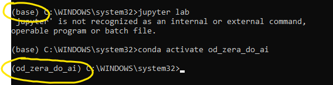
-
Następnie przejdź do folderu z Twoimi notebookami (domyślnie w kursie jest to folder na pulpicie o nazwie od_zera_do_ai) i skopiuj jego ścieżkę.
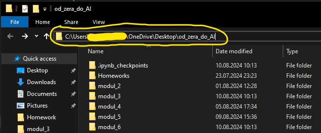
-
Przejdź do tego folderu w konsoli, używając komendy
cdi wklejając jego ścieżkę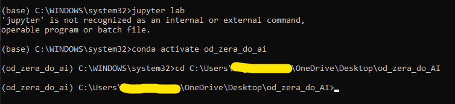
-
Na koniec uruchom
jupyter lab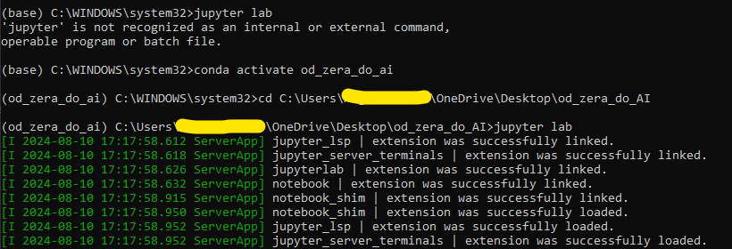
Jak stworzyć nowe środowisko Conda z pliku environment.yml¶
Poniższa instrukcja pokazuje, jak utworzyć gotowe środowisko na podstawie przygotowanego pliku environment.yml. To najprostszy sposób, aby wszyscy mieli identyczną konfigurację pakietów.
1) Pobierz plik environment.yml¶
- Pobierz plik: environment.yml
- Zapisz plik w wybranym folderze (np.
Pulpit/od_zera_do_ai).
2) Otwórz terminal Anaconda Prompt¶
3) Przejdź do folderu z plikiem¶
Uruchom w terminalu Anaconda Prompt następującą komendę:
dla Windows:
cd C:\Users\TwojeImie\Desktop\od_zera_do_ai
dla macOS/Linux:
cd ~/Desktop/od_zera_do_ai
Uwaga
Tutaj wstaw swoją ścieżkę do folderu!
Szybciej z uzupełnianiem ścieżki
Zamiast ręcznie wpisywać ścieżkę do folderu, po wpisaniu cd i spacji możesz po prostu przeciągnąć folder od_zera_do_ai do terminala — ścieżka zostanie wtedy automatycznie uzupełniona.
Upewnij się, że w tym folderze (w tym projekcie od_zera_do_ai) znajduje się pobrany wcześniej plik environment.yml.
4) Utwórz środowisko na podstawie pliku¶
Wybierz odpowiednią komendę:
- domyślnie zostanie użyta nazwa środowiska wskazana w pliku (
od_zera_do_ai_v2):
conda env create -f environment.yml
- jeśli chcesz wymusić własną nazwę środowiska:
conda env create -f environment.yml -n moja_nazwa_srodowiska
Podczas instalacji Conda może poprosić o potwierdzenie – wpisz y i naciśnij Enter.
Uwaga
Cały proces może zająć nawet około 10 minut. Zależy to od szybkości internetu i mocy komputera. Zatem nie zamykaj terminala ani nie zamykaj środowiska przed jego zakończeniem.
5) Aktywuj środowisko¶
Po pomyślnym zakończeniu instalacji, aktywuj środowisko:
conda activate od_zera_do_ai_v2
Jeśli użyłeś własnej nazwy, aktywuj odpowiednio: conda activate moja_nazwa_srodowiska.
6) Szybka weryfikacja¶
conda list
python --version
jupyter lab --version
Jeżeli widzisz listę pakietów i wersje poleceń się wyświetlają – środowisko działa.
7) Jak zaktualizować istniejące środowisko z nowego pliku?¶
Gdy plik environment.yml zostanie zaktualizowany (np. dojdą pakiety), zaktualizuj swoje środowisko:
conda env update -f environment.yml --prune
Flaga --prune usuwa pakiety, które nie występują już w pliku.
8) Najczęstsze problemy i rozwiązania¶
conda is not recognized: zainicjalizuj Condę w PowerShell albo użyj Anaconda Prompt (patrz sekcja wyżej o konfiguracji Condy).SpecNotFound: environment.yml: upewnij się, że jesteś w katalogu z plikiem (dirna Windows lublsna macOS/Linux).- Środowisko już istnieje: użyj aktualizacji (
conda env update -f environment.yml --prune) albo usuń stare środowisko i utwórz ponownie:conda env remove -n od_zera_do_ai_v2 conda env create -f environment.yml